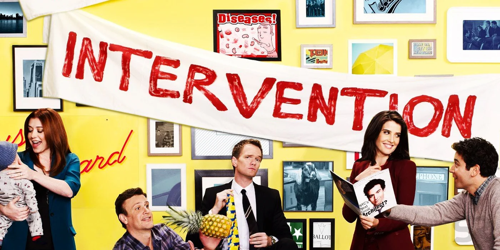
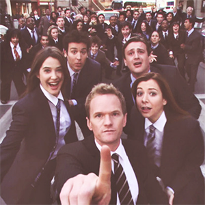
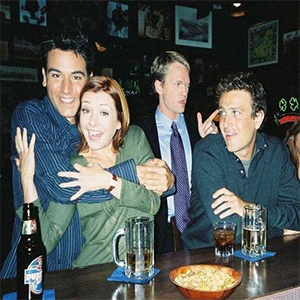
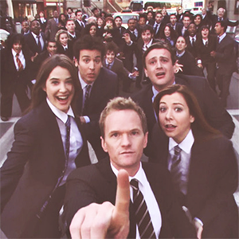
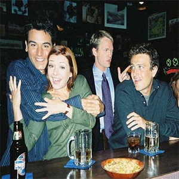

Sobre Nós
PRIMEIRAMENTE O QUE É?
How I Met Your Mother (no Brasil, Como Eu Conheci Sua Mãe) é uma sitcom estadunidense da CBS criada por Carter Bays e Craig Thomas. Estreou no dia 19 de setembro de 2005. A temporada 2013-14, sua nona edição, é a última, encerrando-se em 31 de março de 2014, após 208 episódios. A série mostra Ted Mosby em 2030 narrando aos seus filhos a história de como conheceu a mãe deles. O seriado foi indicado para 24 prêmios Emmy até então, ganhando sete.
A série gira em torno da vida de Ted Mosby e dos seus amigos, que é narrada pelo próprio aos seus filhos, 25 anos mais tarde. Bob Saget, como Ted Mosby do futuro, conta então aos filhos as histórias e peripécias que o levaram a conhecer a mãe deles. As outras personagens principais são Marshall Eriksen, Robin Scherbatsky, Lily Aldrin e Barney Stinson. Em 2005, aos 27 anos, o jovem Ted Mosby (Josh Radnor), após o seu melhor amigo, Marshall Eriksen (Jason Segel), ficar noivo, decide finalmente ir em busca da sua cara-metade. Com gestos românticos questionáveis, Ted conhece Robin Scherbatsky (Cobie Smulders), no bar que costumavam frequentar, Maclaren's Pub. Após uma série de eventos Robin passa a pertencer ao grupo de amigos de Ted: Barney (Neil Patrick Harris), Marshall (Jason Segel), e sua noiva, Lily (Alyson Hannigan), que namoram desde o primeiro ano da faculdade. No dia 11 de Janeiro de 2010, a série alcançou os 100 episódios com o episódio Girls vs Suits.
Ponto bastante interessante do How I Met Your Mother é a forma como a série é conduzida. Uma vez que a história se faz por uma narração, feita por Ted Mosby no futuro, os roteiristas utilizam bem dos artifícios oriundos desse tipo de escrita. Narrações são construídas com base em relatos, testemunhos, ou seja, estão sempre sujeitas as emoções do interlocutor no momento em que ele vivencia a ação ou, quando mais tarde, analisa tal ação com juízos de valores agora diferentes, ademais, mentiras são aceitas, pois não se trata a narração de um retrato fiel do passado. Inúmeras vezes nos deparamos com os personagens atuando de forma surpreendente e impossível, é possível citar como exemplos: quando o Marshall pula do terceiro andar de seu prédio, sem qualquer dificuldade, e quando a Robin dá um mortal com uma bicicleta de criança passando em cima de alguns carros. Concluindo, o espectador nunca sabe o que virá pela frente e se o que está vendo realmente aconteceu daquela forma, ou até mesmo, se chegou a acontecer.
AGORA, QUEM SOU EU?
Meu nome é Mateus Silva, tenho 17 anos, e por meio desse site quero promover a série How I Met Your Mother e divulgar alguns produtos relacionados a série.
 


